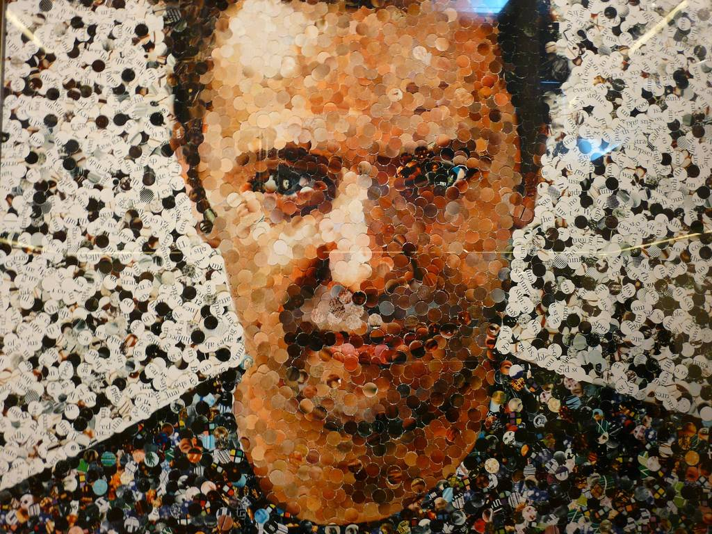
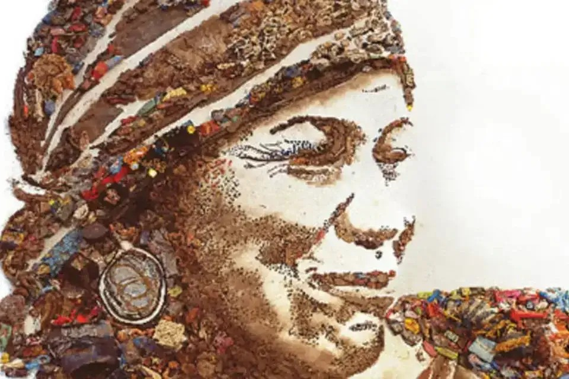
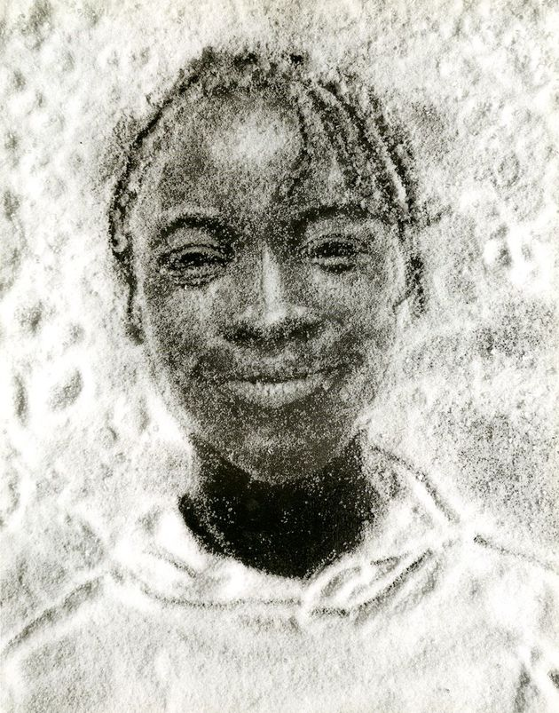
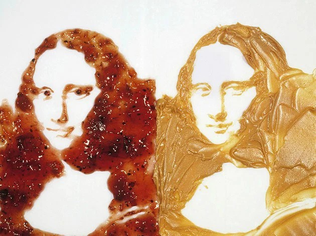

Fonte: Vik Muniz
A arte sustentável surge questionando se não poderíamos reutilizar aquilo que descartamos. O grande desperdício de bens duráveis, em razão de nossa sociedade consumista, traz uma quantidade enorme de resíduos. Esta forma de arte funciona como forma de conscientização e educação ambiental.
Vimos em aula que Vik Muniz é um artista plástico com reconhecimento mundial por utilizar em suas obras materiais descartados. Ele nasceu em São Paulo e atualmente trabalha nos Estados Unidos. Além da pintura, ele trabalha também com esculturas e fotografias. The Bearer (Irma) é uma de suas obras mais icônicas, criada em 2008 no aterro sanitário Jardim Gramacho. Ela faz uma crítica social e ambiental ao descarte inadequado de resíduos, além de dar visibilidade ao trabalho dos catadores.


